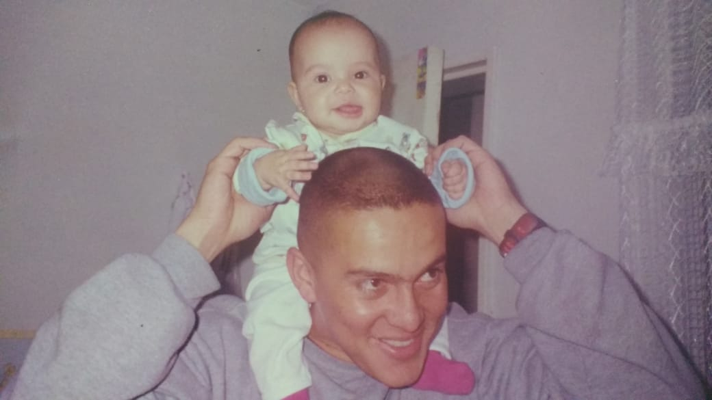
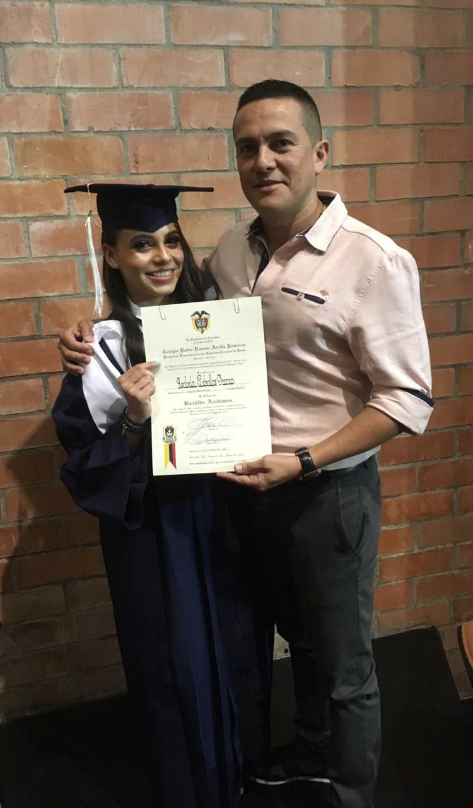

Mi nombre es Isabela Ceballos Franco, nací en el municipio de Envigado el 05 de diciembre del año 2001, en el seno de una familia que para mi es la "mejor de todas...", muy numerosa por cierto y además de ello muy unida, cada integrante con su característica única y sus diferentes perspectivas de vida. Soy una mujer que desde pequeña me he caracterizado por el gusto de aprender temas de cualquier ámbito, y una gran pasión por todo lo relacionado con las ciencias exactas.
A los 2 años ingresé al Jardín Infantil Maravillas, fue una guardería genial, donde me enseñaron muy buenas bases y empecé a desprenderme de mis papás. Como estudiaba en la tarde, la que me cuidaba en la mañana era mi abuela, ella me cantaba y me hacía los almuerzos más ricos. No recuerdo con claridad muchos momentos allí vividos pero si los más significativos como el "campamento de piratas" y como olvidar los primeros amiguitos con los que todo se volvía más ameno.
Mi padre es un ser maravilloso, para mí una de las personas más sabias, siempre sabe como expresar sus ideas y me recalca que debo ser muy "Valiente" en la vida para poder seguir soñando. Lo que más me gusta de él es que no le da miedo los nuevos comienzos y los grandes retos por que para él, "Quien no arriesga, no gana".
Mi época de colegio fue muy tranquila, hacía amigas facilmente, siempre me destacaba por ser una alumna integral y mis calificaciones eran de las mejores, aprendía con mucha facilidad y me gustaba cumplir con todas las actividades. Tenía muy buen acompañamiento por parte de mi familia y siempre cuando necesitaba ayuda ahí estaban.
El comienzo de la universidad debo aceptar que no sé me hizo tan fácil adaptarme a ella, primero que todo estaba atravesando una recuperación de una cirugía compleja que me trajo muchos altibajos y sentía mucha inseguridad. Al pasar el tiempo fui consiguiendo grandes amistades, personas únicas que me hicieron cambiar muchos pensamientos y las cosas se fueron dando poco a poco, aportando mucho esfuerzo, dedicación y responsabilidad. Hoy en día aunque a veces es mucha carga académica, me siento muy feliz de la carrera que estoy cursando, todos los días aprendemos algo nuevo y cosechamos grandes experiencias.
Mi madre no la cambiaría por nada, es el ser más fuerte que conozco y una de mis mejores amigas, me ha educado con excelentes valores y siempre está en cada momento de mi vida. Es por la persona que día a día me esfuerzo y quiero salir adelante, hacerla sentir orgullosa constantemente es mi objetivo principal. Mi padrastro, alguien que se convirtió esencial en mi vida y ahora es un segundo padre que Dios me regaló, entregado para que todo salga bien y a diario me enseña tanto para la vida como para lo académico.
Para concluir, a diario me esfuerzo para aprender cosas que me ayuden a crecer personalmente, me parece que para ser alguien valioso, primero se debe ser PERSONA. Soy alguien que se esfuerza a diario por depositar un poco de luz en cada persona que me rodea y mucha energía positiva por que de esta manera es como siento que la vida se debe vivir, mirando siempre su mejor lado y aprovechando cada momento como si fuera el último...